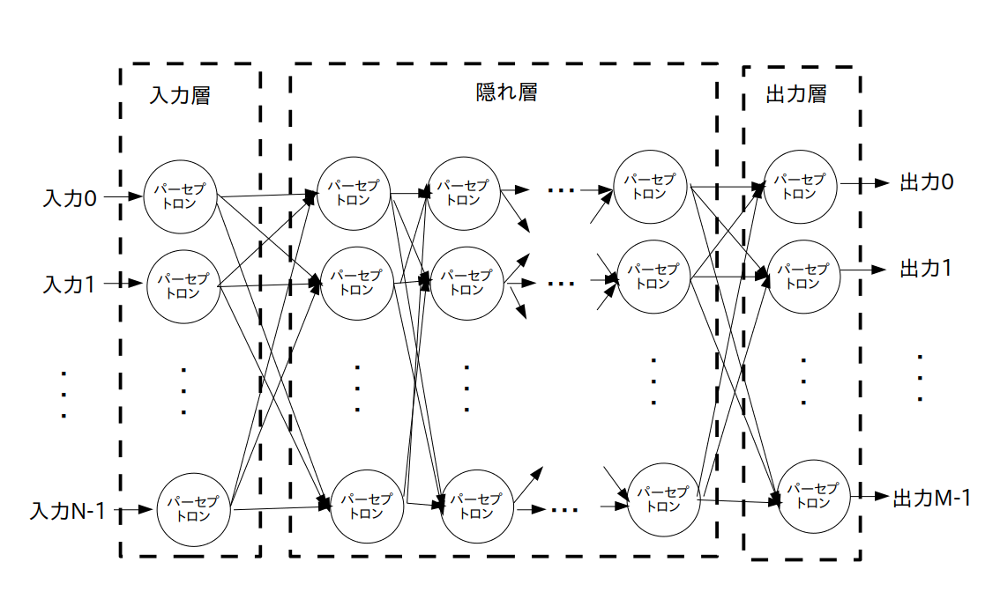

生物学で学んだように、動物の脳は多数(人間の大脳の場合140億個位)の「神経細胞」という細胞がシナプス結合されて出来ています。
そこでまず数学者はこの「神経細胞」を数学的にモデル化した「パーセプトロン」を考案しました。
パーセプトロンは $n$ 入力信号 - $1$ 出力信号の関数 $f()$ であり、以下の数式で表すことができます。
$y$ : 出力信号
$x_i$ : $i$ 番目の入力信号、 $(i=1,2,\cdots,n)$
$w_i$ : $i$ 番目の入力信号に掛けられる重み(weight)
$b$ : バイアス
また関数 $f()$ の事を正式には「活性化関数」といいます。
活性化関数の選び方には色々な流儀があるのですが、今回のアクティビティでは良く使われている「シグモイド関数」と「SoftMax関数」を用いたいと思います。
$w_i$ と $b$ は変数なので値は自由に決めても良いのですが、普通はディープラーニングを使って値を決めます。
詳しくはディープラーニングのページで説明します。
さてパーセプトロンは以下の様なグラフで表すことが出来ます。
なお、このグラフは前の学習項目で学んだ「データフローグラフ」とは異なる一般的なグラフです。
つまりこの図の○はOPノードではなくて活性化関数 $f()$ を表しています。
次に数学者は「パーセプトロン」を多数結合して「多層ニューラルネットワーク」(「多層構造ニューラルネットワーク」とか「多層パーセプトロン」などとも呼ばれることもあります)を作りました。
多層ニューラルネットワークは「入力層」、「隠れ層(中間層とも言う)」、「出力層」ごとに層(レイヤー)分けされた多層構造になっています(図2)。
「入力層」、「出力層」は 1 層構造ですが、「隠れ層」は 2 層以上の多層構造になる場合もあります。
いずれにしろ、各層は多数のパーセプトロンが結合されて出来ています。
なおパーセプトロンの事を「ユニット」と呼ぶこともあります。
多数のパーセプトロン(ユニット)が階層状に結合されて出来ている
ただしあまり隠れ層の層数を増やすとディープラーニングに必要な時間が膨大になりますので、今回のアクティビティでは中間層が 1 層だけで出来ている 3 層ニューラルネットワークを扱いたいと思います(図3)。
入力層が N 個、隠れ層(1層)が K 個、出力層が M 個のパーセプトロンで出来ているネットワーク
パラメータ:
$w_{ij}^{\textrm h}$ ・・・ 入力層のパーセプトロン No.$i$ の出力信号から、隠れ層のパーセプトロン No.$j$ への入力に掛けられる重み
$b_{j}^{\textrm h}$ ・・・ 隠れ層のパーセプトロン No.$j$ のバイアス
および
$w_{ij}^{\textrm o}$ ・・・ 隠れ層のパーセプトロン No.$i$ の出力信号から、出力層のパーセプトロン No.$j$ への入力に掛けられる重み
$b_{j}^{\textrm o}$ ・・・ 出力層のパーセプトロン No.$j$ のバイアス